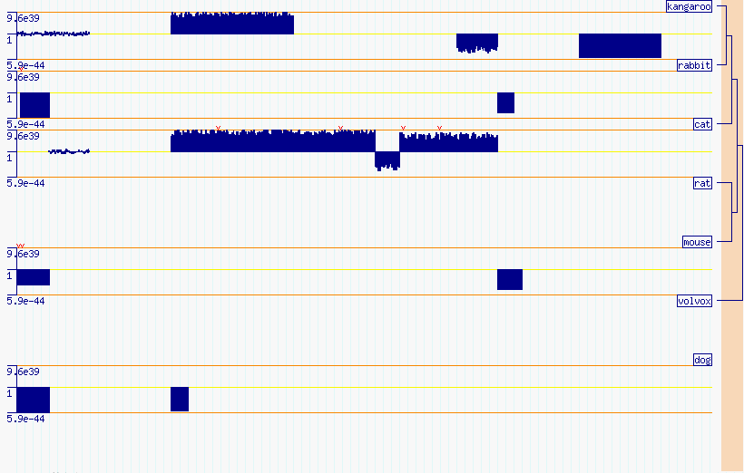
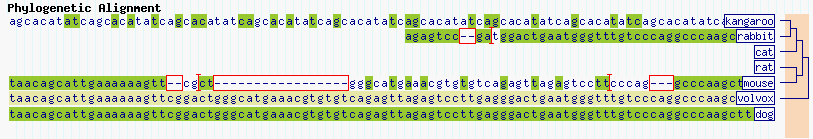

Note: the phylogenetic tree display appears to be broken in GBrowse version 2.0. Help bringing it back would be much appreciated.
This mini-tutorial section will guide you through the Phylogenetic Tree Viewer. It is a track that will draw a cladogram of species that have alignments with the species within the set view window. The alignment scores will be drawn at far magnification, and the DNA alignments for close magnification. This tutorial is based on the Volvox database created within the main GBrowse2 tutorial.
There are three main types of data required for this view: the GFF alignment data, alignment sequence data, and the species tree file.
The tree file is read with the use Bio::TreeIO module and all formats
compatible with this can be used with this track. Note that all
species do not have to be included in this file. All organisims not
included in this file but included in the GFF alignment data will
appear as disconnected branches in the cladogram (Figure AAA and AAB).
Here is an example using the NEWICK format:
Different formats can be specified by changing the 'tree_format' entry in this track's conf file entry.((((kangaroo,rabbit),(cat)),(rat,mouse)),volvox);
The alignment and gap data makes use of the GFF3 CIGAR format as
specified by the sequence ontology website: http://www.sequenceontology.org/gff3.shtml.
Alignments are specified with the standard start, stop and score
columns and can contain special tag=value pairs. Specifically
'species' indicate the name of the species, 'Target' indicate which
FASTA sequence to use and the 'Gap' indicates matches and mismatches.
Matches are specified by 'M', deletions by 'D' and insertions by 'I'
followed by the number of bases. An example can be found in the volvox_phyloalign.gff3
file. Copy this file into your data_files folder.
ctgA pa submatch 1050 1500 8.5e-28 + . ID=Match3;species=mouse;Target=pagt2215 1 451;Gap=M70 D2 M2 I2 M2 D17 M33 I20 M5 D3 M317 ctgA pa submatch 7000 7300 9.5e-36 + . ID=Match3;species=mouse;Target=pagt2215 953 1253;Gap=M301 ctgA pa match 1150 7200 . + . ID=Match5;species=rabbit;Target=pagt7675 1 1153 ctgA pa submatch 1150 1500 4.1e-43 + . ID=Match5;species=rabbit;Target=pagt7675 1 351;Gap=M7 D2 M2 I2 M342
The FASTA sequence files are added just as all the other tracks. Be
sure that your 'Target' column specify the correct FASTA species to
use.
The conf file is a bit bloated for now. Make sure you specify the
exact path of your tree file and what format it is in.
conf file example
[PhyloAlignment] glyph = phylo_align global feature = 1 height = 40 draw_clado_left = 0 species_spacing = 1.2 species_spacing_score = 5 hide_label = 0 fgcolor = darkblue errcolor = red axis_color = darkorange mid_axis_color = yellow clado_bg = peachpuff bg_color = white targ_color = yellowgreen ref_color = palegoldenrod key = Phylogenetic Alignment reference_species = volvox #tree_step_width = 5 tree_file = /var/www/gbrowse2/databases/volvox/species.tre tree_format = newick
If everything is running correctly, you should see the images shown in Figures AAA and AAB, depending on the zoom level.

Figure AAA: Phylogenetic alignments scoring level. Note that as 'dog' is not included in the original tree file, it will be placed as a disconnected member of the cladogram.

Figure AAB: Phylogenetic alignments at the DNA level. Note that as 'dog' is not included in the original tree file, it will be placed as a disconnected member of the cladogram.